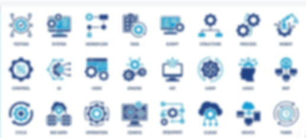
深度整合 AI 人工智慧與軟體開發，橫跨製造業 ERP、企業 MIS、工業自動化監控與 IT 技術委外。潤捷致力於解決您在資訊化過程中面臨的人力、成本及技術痛點。
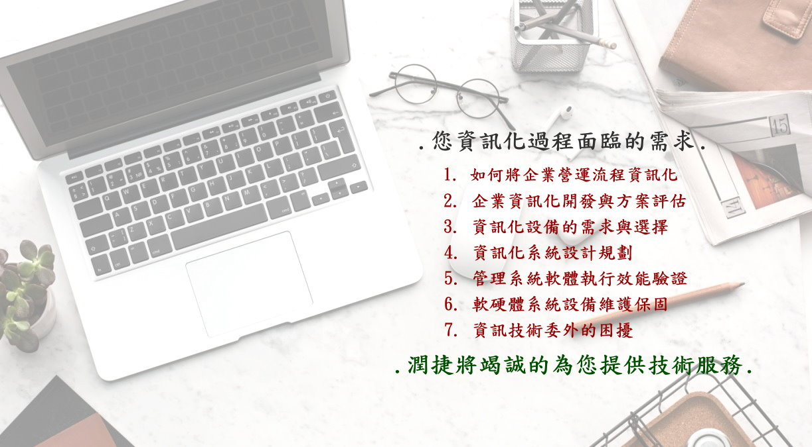
潤捷精準識別出企業在數位轉型與營運過程中，最常遭遇的七大核心需求，並為此提供量身訂做的解決對策：
從基礎架構建置到高端自動化技術，潤捷提供涵蓋軟體開發與硬體設備的一站式整合方案。
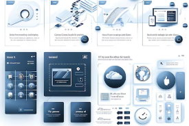
針對特定產業特性，量身開發高度適配的管理介面，讓操作更直觀、管理更高效。
其它軟體如 : 證劵買賣管理系統, 鷹架驗算分析管理, 美髮業管理系統, 遊藝店代幣系統 ...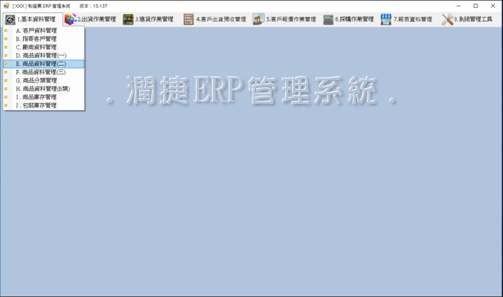
潤捷電控提供專業製造業 ERP 系統規劃設計與建置服務，協助企業整合生產排程、進銷存、財務與管理流程，建立穩定、高效率的資訊系統
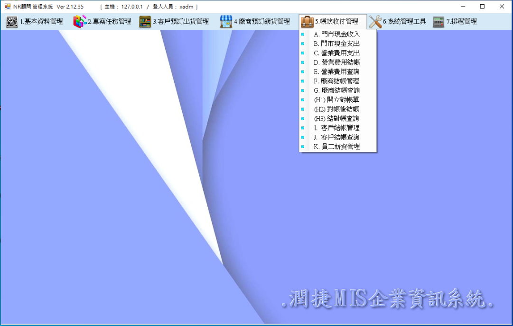
一個以人為導向，利用電腦硬體、軟體和網路裝置的資訊技術，對人員和業務流程，進行一系列的資訊收集存儲和數據處理、傳遞、加工、整理的系統，生成決策者於日常決策的資訊。
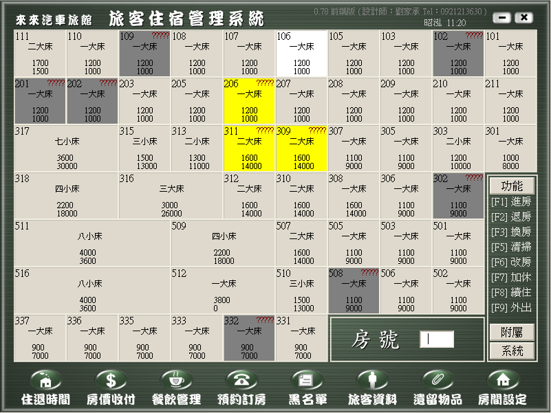
提供直觀的房號狀態顯示（如二大床、一小床規格與房價），具備進房、退房、換房、清掃、預約訂房、黑名單防範及旅客資料完整管理功能。
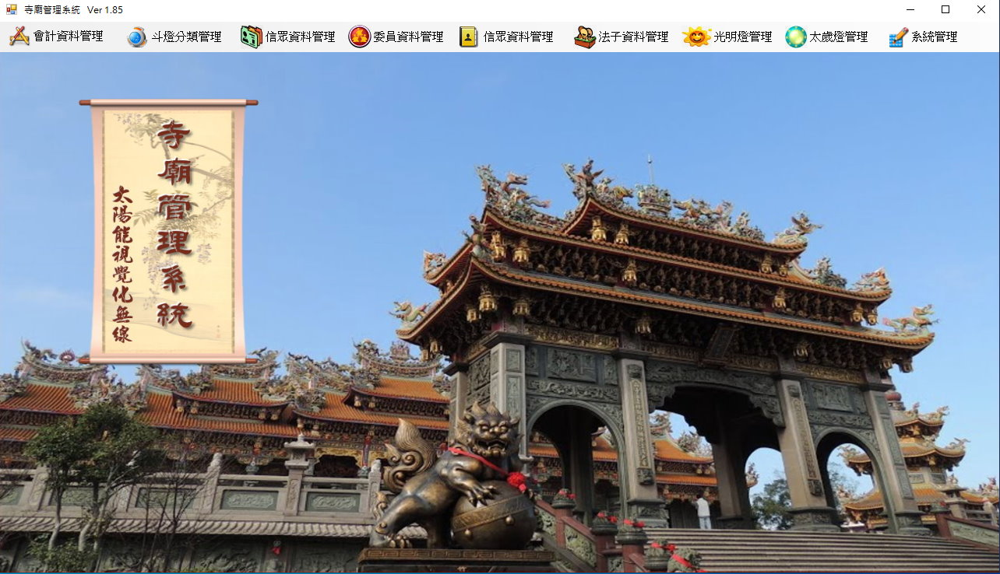
高度整合會計帳務、信眾資料庫、委員管理與法會安排，更具備前衛的光明燈與太歲燈「視覺化無線管理」技術。
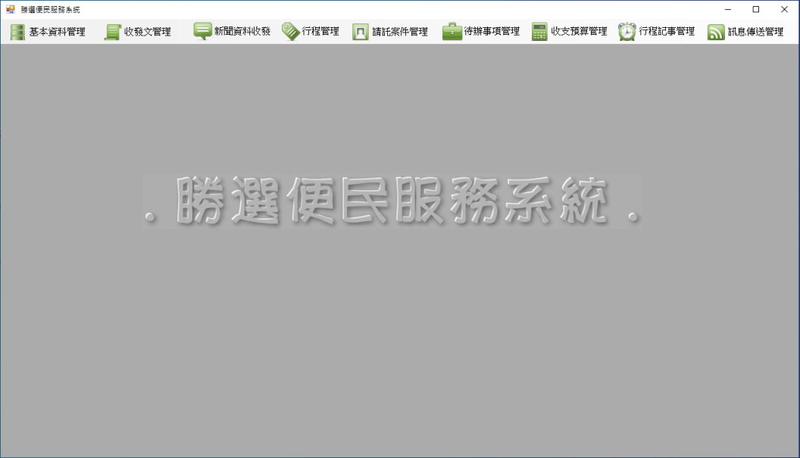
專為選民或大型組織設計，模組包含：收發文管理、新聞資料收發、行程記事、請託案件追蹤及預算精準管理。
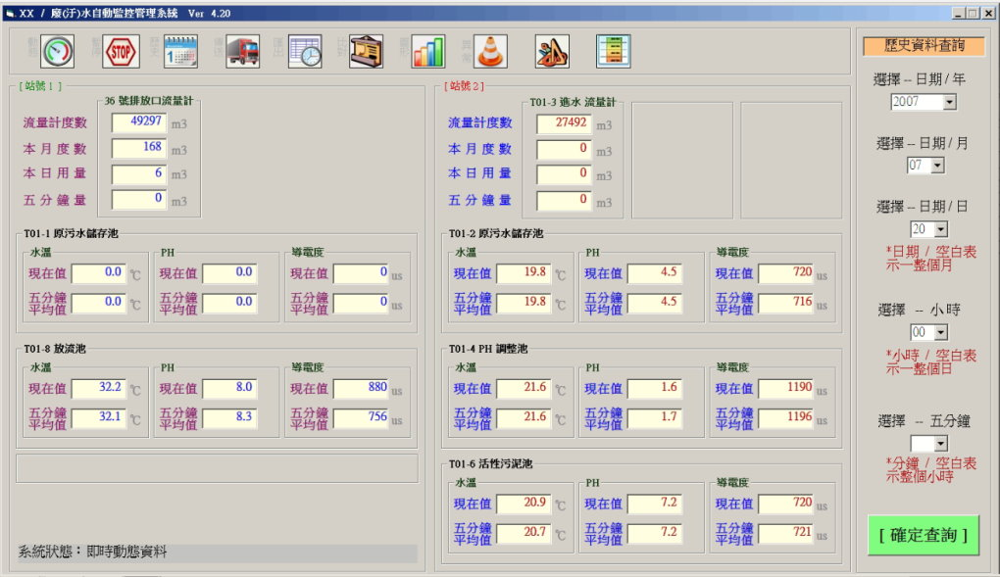
具備即時環境參數監測（溫度/光控/PH值/導電度）、連動設備狀態控制（風扇/冷氣/水牆幫浦），並支援歷史資料長效查詢分析。
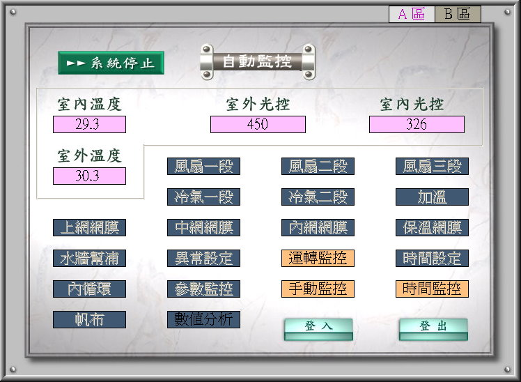
具備即時環境參數監測（室內外溫度/光控/水牆散熱/風速）、連動設備狀態控制（風扇/冷氣/水牆幫浦），並支援歷史資料長效查詢分析。
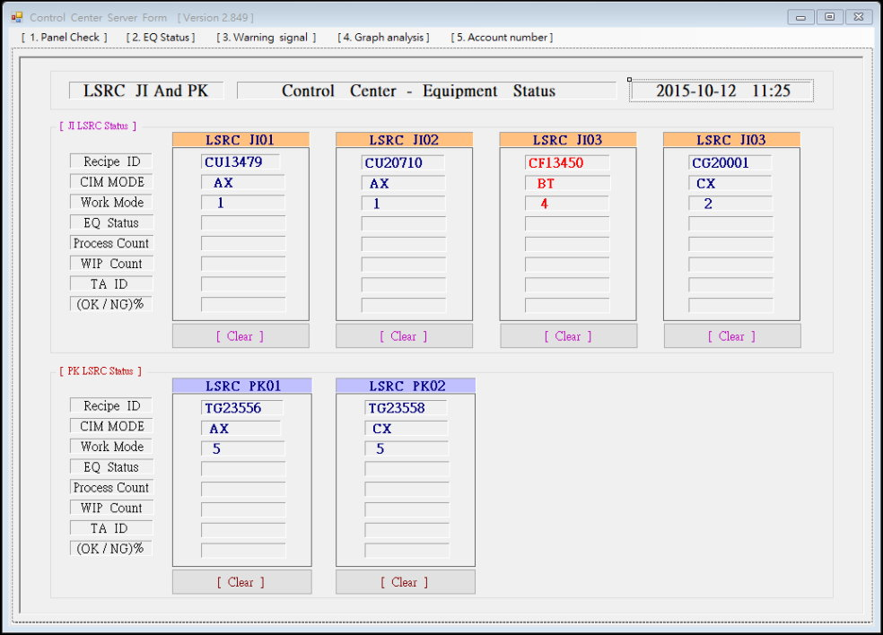
提供液晶螢幕即時 EQ Status, CIM Mode, Process Count, Recipe ID, 以及 Graph analysis 狀態 。
針對極度重視數據隱私的產業，潤捷協助企業建置私有化 AI 環境。
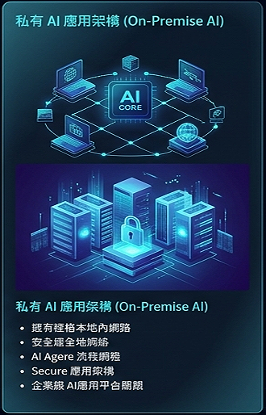
我們開發的 AI Agent 不僅能生成文字，更具備「執行能力」：
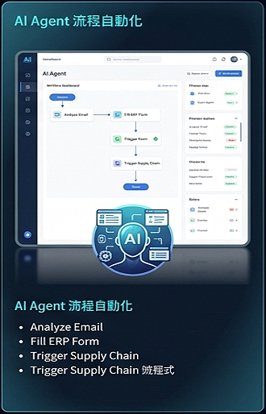
針對缺乏專才或擔心人員流動率高的企業，潤捷提供即時、高效率的遠端與現地維護方案，成為您最堅強的 IT 後盾。
透過專業且系統化的維護，大幅提升資訊設備使用的妥善率，減少不必要的設備汰換與隱形成本。
讓企業主與核心團隊無須再處理繁瑣、耗時的 IT 技術問題，全心專注於企業經營與市場開拓。
提供即時性的遠端連線除錯與現地維護服務，以最高效率排除故障，確保企業營運不中斷。
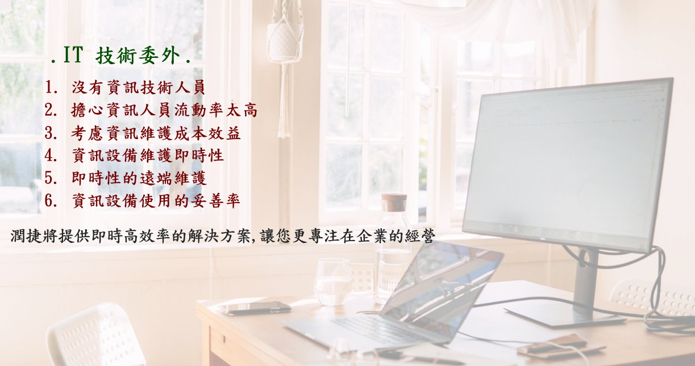
潤捷的網頁開發流程強烈強調跨平台相容性，確保完美的使用者體驗：
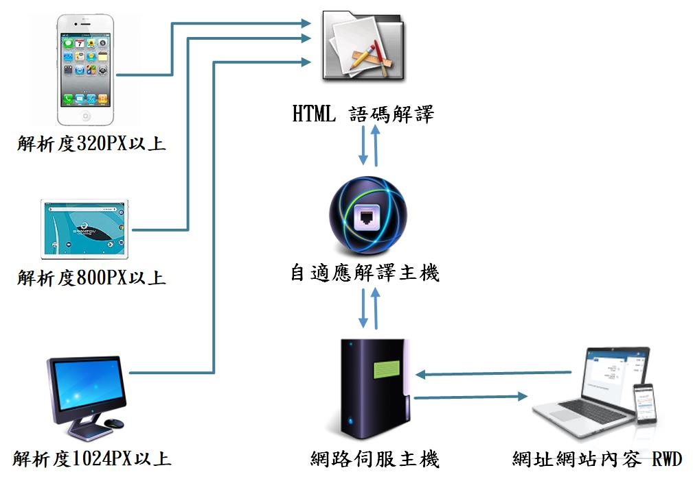
在網路架構規劃上，潤捷採用多層次的防護與連結模式，打造堅不可摧的企業內網：